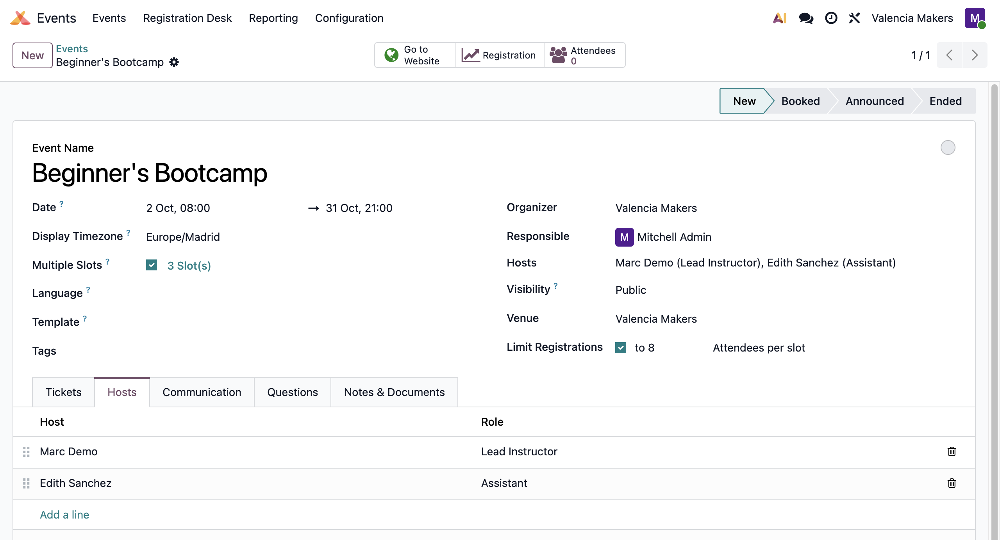
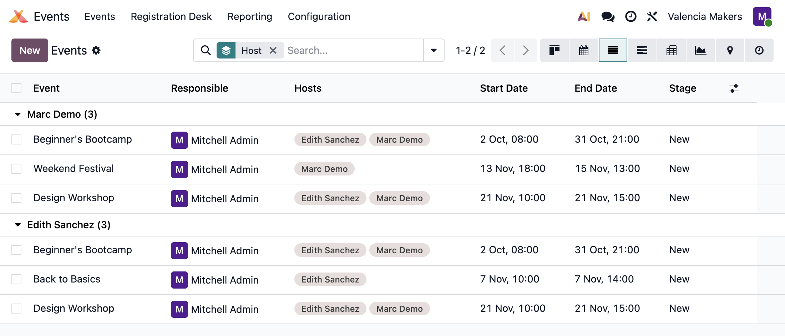

In standard Odoo, an event records an Organizer (the company organizing it), and a Responsible user (who owns the record), but not the people who actually run it. Event Hosts adds these people to the event as contacts, each with an optional role, in an order you set.

Hosts are contacts, so a guest instructor or speaker does not need an Odoo user account.
Drag hosts into any order, and the event header will list them the same way.
Search and group events by host, or add a Hosts column to the events list view.
Adding or removing a host is logged in the chatter, just like Responsible and Organizer changes.
Click Hosts on the event form to jump to the Hosts tab, where you add, reorder, and remove hosts.
This module only requires Events Organization, the backend part of the Events app, and by itself changes nothing on a website.